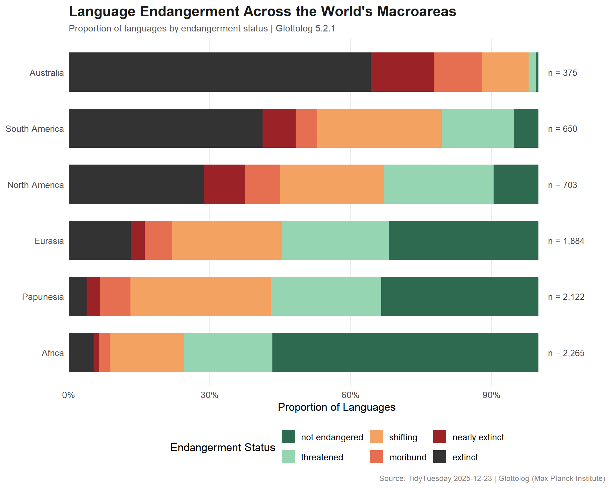
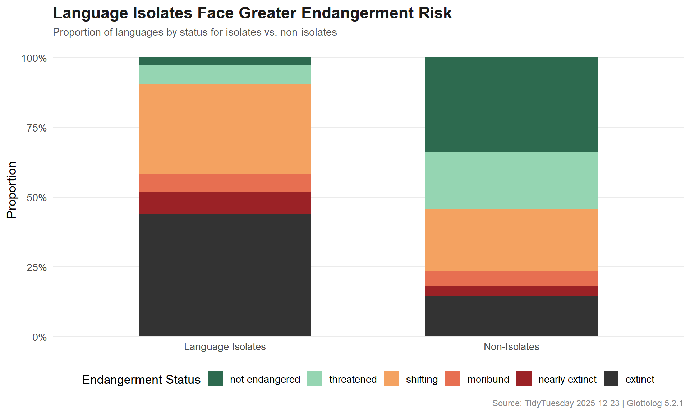

Exploring the world’s 8,000+ languages through Glottolog — which regions face the greatest endangerment, how do language families span the globe, and what patterns emerge from mapping linguistic diversity?
This week’s dataset comes from Glottolog 5.2.1, an open-access linguistics database maintained by the Max Planck Institute for Evolutionary Anthropology. The database encompasses over 8,000 languages of the world with details on names, genealogy, geography, and endangerment status.
Which macroareas have the highest concentration of endangered languages?
Are language isolates more likely to be endangered?
Which language families span the widest geographic range?
What geographic patterns emerge when mapping endangered languages?
Loading necessary packages
My handy booster pack that allows me to install (if needed) and load my usual and favorite packages, as well as some helpful functions.
raw <- tidytuesdayR::tt_load('2025-12-23')languages <- raw$languagesfamilies <- raw$familiesendangered_status <- raw$endangered_status
Exploratory Data Analysis
The my_skim() function is a modified version of the skimr::skim() function that returns the number of missing data points (cells as NA) as well as the inverse (e.g.: number of rows that are notNA), the count, minimum, 25%, median, 75%, max, mean, geometric mean, and standard deviation. It also generates a little ASCII histogram. Neat!
Languages
languages %>%my_skim(.)
Data summary
Name
Piped data
Number of rows
8612
Number of columns
9
_______________________
Column type frequency:
character
6
logical
1
numeric
2
________________________
Group variables
None
Variable type: character
skim_variable
n_missing
complete_rate
min
max
empty
n_unique
whitespace
id
0
1.00
8
8
0
8612
0
name
0
1.00
1
58
0
8612
0
macroarea
224
0.97
6
28
0
10
0
iso639p3code
755
0.91
3
3
0
7857
0
countries
102
0.99
2
101
0
707
0
family_id
182
0.98
8
8
0
247
0
Variable type: logical
skim_variable
n_missing
complete_rate
mean
count
is_isolate
0
1
0.02
FAL: 8430, TRU: 182
Variable type: numeric
skim_variable
n_missing
complete_rate
n
min
p25
med
p75
max
mean
geo_mean
sd
hist
latitude
312
0.96
8612
-55.27
-5.02
6.54
20.19
73.14
8.55
13.40
19.15
▁▅▇▃▁
longitude
312
0.96
8612
-178.78
6.82
45.02
123.49
179.31
50.11
55.66
81.15
▁▃▇▅▇
languages %>%count(macroarea, sort =TRUE)
# A tibble: 11 × 2
macroarea n
<chr> <int>
1 Africa 2363
2 Papunesia 2177
3 Eurasia 2017
4 North America 767
5 South America 676
6 Australia 381
7 <NA> 224
8 Africa;Eurasia 4
9 Africa;Eurasia;South America 1
10 Africa;North America 1
11 Eurasia;Papunesia 1
languages %>%count(is_isolate, sort =TRUE)
# A tibble: 2 × 2
is_isolate n
<lgl> <int>
1 FALSE 8430
2 TRUE 182
Not every language has an endangerment classification in this dataset. Languages with NA status are typically those without enough documentation to assess their vitality — which is itself a concerning signal.
Endangerment by Macroarea
Which regions of the world face the greatest concentration of endangered languages?
The hero plot maps language endangerment status by macroarea, showing the proportion of languages at each risk level.
# Endangerment palette: not endangered to extinctstatus_cols <-c("not endangered"="#2D6A4F","threatened"="#95D5B2","shifting"="#F4A261","moribund"="#E76F51","nearly extinct"="#9B2226","extinct"="#333333")region_order <- region_danger %>%filter(status_label !="not endangered") %>%group_by(macroarea) %>%summarize(pct_at_risk =sum(pct), .groups ="drop") %>%arrange(pct_at_risk) %>%pull(macroarea)plot_data <- region_danger %>%mutate(macroarea =factor(macroarea, levels = region_order))# Annotations: total language counts per regionregion_totals <- plot_data %>%group_by(macroarea) %>%summarize(total =first(total), .groups ="drop")ggplot(plot_data, aes(x = macroarea, y = pct, fill = status_label)) +geom_col(width =0.7) +geom_text(data = region_totals,aes(x = macroarea, y =1.02, label =paste0("n = ", scales::comma(total)), fill =NULL),size =3.5,hjust =0,color ="#444444" ) +scale_y_continuous(labels = scales::percent_format(),expand =expansion(mult =c(0, 0.12)) ) +scale_fill_manual(values = status_cols,name ="Endangerment Status",drop =FALSE ) +coord_flip() +labs(title ="Language Endangerment Across the World's Macroareas",subtitle ="Proportion of languages by endangerment status | Glottolog 5.2.1",x =NULL,y ="Proportion of Languages",caption ="Source: TidyTuesday 2025-12-23 | Glottolog (Max Planck Institute)" ) +theme_minimal(base_size =13) +theme(plot.title =element_text(face ="bold", size =17, color ="#1B1B1B"),plot.subtitle =element_text(size =11, color ="#555555"),plot.caption =element_text(size =9, color ="#888888"),legend.position ="bottom",panel.grid.major.y =element_blank(),panel.grid.minor =element_blank() ) +guides(fill =guide_legend(nrow =2))

isolate_plot_data <- isolate_status %>%mutate(isolate_label =ifelse(is_isolate, "Language Isolates", "Non-Isolates"),isolate_label =factor(isolate_label, levels =c("Language Isolates", "Non-Isolates")) )ggplot(isolate_plot_data, aes(x = isolate_label, y = pct, fill = status_label)) +geom_col(width =0.6) +scale_y_continuous(labels = scales::percent_format(), expand =expansion(mult =c(0, 0.05))) +scale_fill_manual(values = status_cols,name ="Endangerment Status",drop =FALSE ) +labs(title ="Language Isolates Face Greater Endangerment Risk",subtitle ="Proportion of languages by status for isolates vs. non-isolates",x =NULL,y ="Proportion",caption ="Source: TidyTuesday 2025-12-23 | Glottolog 5.2.1" ) +theme_minimal(base_size =13) +theme(plot.title =element_text(face ="bold", size =17, color ="#1B1B1B"),plot.subtitle =element_text(size =11, color ="#555555"),plot.caption =element_text(size =9, color ="#888888"),legend.position ="bottom",panel.grid.major.x =element_blank(),panel.grid.minor =element_blank() ) +guides(fill =guide_legend(nrow =1))

Final thoughts and takeaways
The Glottolog database paints a sobering picture of global linguistic diversity. While over 8,000 languages are catalogued, a significant proportion face some level of endangerment — and the distribution of risk is far from uniform.
Australia and South America stand out as the macroareas with the highest proportions of endangered and extinct languages, reflecting the devastating impact of colonization on indigenous language communities. Papunesia (New Guinea and the Pacific Islands), despite being one of the most linguistically dense regions on Earth, also shows substantial vulnerability.
Language isolates — those with no known living relatives — are measurably more vulnerable than languages belonging to established families. This makes intuitive sense: a language with no relatives has no “backup” in the genetic sense. When it disappears, an entire branch of human linguistic heritage vanishes with it.
Note
The Glottolog endangerment classifications draw on multiple sources including UNESCO’s Atlas of the World’s Languages in Danger. Languages without a status classification are not necessarily safe — many simply lack sufficient documentation to be assessed, which is its own form of invisibility.